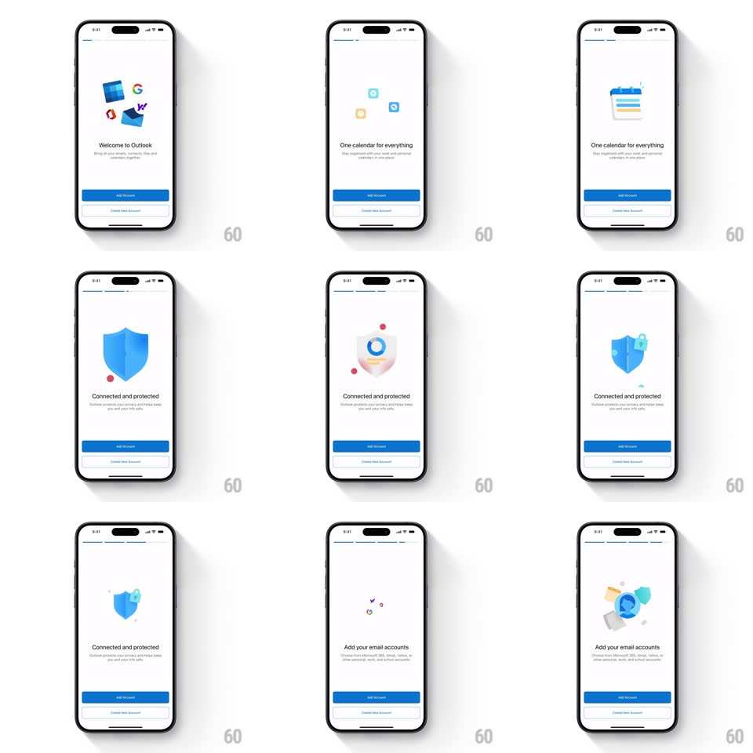

Media
Frame-by-frame

Rebuild this interaction 1:1: Outlook's onboarding story - auto-advancing slides where flat vector illustrations assemble piece by piece (Outlook envelope, floating app logos, calendar pages, shield with orbiting dots), headline and subcopy below, blue "Add Account" and ghost "Create New Account" buttons pinned.

Rebuild this interaction 1:1: Outlook's onboarding story - auto-advancing slides where flat vector illustrations assemble piece by piece (Outlook envelope, floating app logos, calendar pages, shield with orbiting dots), headline and subcopy below, blue "Add Account" and ghost "Create New Account" buttons pinned.
## Integration
Integration: stack-agnostic spec - springs given as stiffness/damping, timed motions as duration + curve; map every value to your framework and animation library of choice.
## Scene
White slides, each: a vector illustration center (blue envelope / tumbling Google-Gmail-Outlook logos / calendar sheet / shield with lock and orbiting colored dots), bold headline ("Welcome to Outlook", "One calendar for everything", "Connected and protected", "Add your email accounts"), gray subcopy, and pinned bottom buttons. A thin progress line at top advances per slide.
## Motion spec
Pattern: auto-assembling illustration story.
- Each slide's illustration ASSEMBLES on entry: component pieces fly in from scattered offsets (+-40px) with rotation (+-15deg), converging into the final composition (spring ~280/20, pieces staggered 70ms).
- After assembly, pieces idle with gentle drift (+-4px, +-3deg, 3-5s sines, each piece its own phase) - the illustration breathes while the user reads.
- Auto-advance every ~4.5s: the current illustration's pieces scatter outward (reverse of entry, 300ms) as the slide crossfades to the next (350ms); headline and subcopy crossfade with it.
- The top progress line fills per slide (linear over the slide's dwell), then the next segment begins.
- Buttons are constant and static - only the story above them moves.
## Calibration
- Pieces never overlap the headline during assembly - flight paths arc above it.
- Auto-advance pauses on touch-down anywhere; resumes 3s after release.
## Reduced motion
Illustrations appear assembled; slides crossfade; no auto-advance (manual only).
## Don't miss
- Assembly is per-slide and semantic: the security slide's dots ORBIT the shield, the account slide's logos tumble - motion matches meaning.
- The progress line is the only pager - no dots.